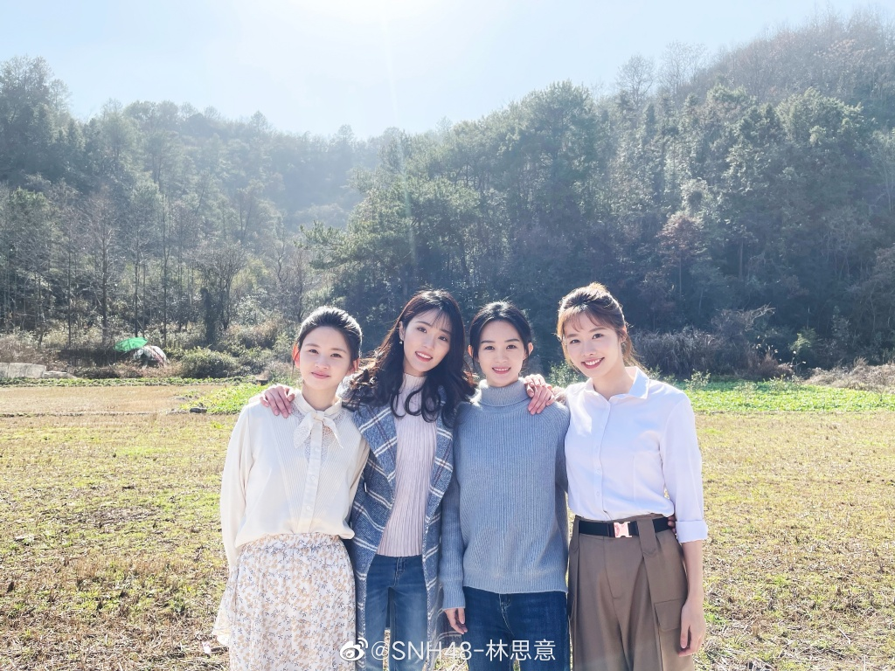

林思意
林思意（1994年4月5日－）是中国大型女子偶像团体SNH48成员，所属队伍为Team HII。
出生于中国浙江省温州市，2013年8月18日以SNH48二期生成员的身份正式出道，
同年的11月11日加入SNH48 Team NII。2018年2月3日所属队伍改为Team HII。
重要事件
- 2012年8月至12月，担任北京电视台生活频道电视编导。2012年12月至2013年8月，担任任北京鹊拾梅文化发展有限公司《桌游志》编辑部实习编辑。
- 2013年8月18日，通过SNH48二期生终审选拔，成为34名合格者之一。9月5日，升格为二期生正式成员，成为31名正式成员之一。11月11日，升格Team NII。
- 2014年1月18日，参与了“SNH48红白歌会”，并在演唱会宣布担任Team NII代理队长。
- 2015年月25日，于SNH48第二届总选举，获得第17名，最终获得16050.5票，入选第二届总选举Under Girls。12月26日，参加“SNH48第二届年度金曲大赏REQUEST TIME BEST 30”演唱会。
- 2018年2月3日，SNH48首次大重组后，由SNH48 Team NII成员重新分队至SNH48 Team HII 。7月28日，获得 “SNH48 GROUP第五届偶像年度人气总决选”第十名的成绩。
- 2020年7月28日，发布个人单曲《盛夏的奇迹》；8月15日，参加“创造炙热的青春”SNH48 GROUP第七届偶像年度人气总决选演唱会，获得第5名。
主要成就
- 2014-08-03第1届SNH48一心向前总选举网络人气至高奖的第十二名
- 2015-07-25第二届“梦想高飞”偶像年度人气总选举第十七名
- 2016-01-17“比翼齐飞”SNH48第三届偶像年度人气总决选获得第13名
- 2017-07-29“我心翱翔”SNH48 GROUP第四届偶像年度人气总决选获得第14名
- 2018-07-28参加“砥砺前行”SNH48 GROUP第五届偶像年度人气总决选第10名
- 2020-08-15参加“创造炙热的青春”SNH48 GROUP第七届偶像年度人气总决选获得第5名
主要作品
| 年份 | 名称 | 角色 |
|---|
| 2016年 | 极品家丁 | 萧玉霜 |
| 2017年 | 择天记 | 小黑龙 |
| 2018年 | 芸汐传 | 欧阳宁静 |
| 待播 | 小夜曲 | 许晴儿 |
| 2015年 | 史料不及 | 管家女儿 |
| 2018年 | 恋爱脱线时 | 苗语枝 |
| 2020年 | 浮世双娇传 | 柴蓁蓁 |
生活照

人物评价
林思意阳光开朗，集多种姿态于一身，既有南方女子的温柔，也有北方汉子的豪爽（《桌游志评》），可爱、真性情（《当代歌坛》评），充满青春气息，给人带来正能量（《岁月推理》评）。
林思意坚持梦想，超越自我，并在自己的追梦之路上不停地奋斗（腾讯网评） 。她的成长故事，引发了观众对“光鲜舞台背后的血汗”、“童话故事也有汗水和泪”的热烈讨论，是90后奋斗的新一代（金鹰网评）。
林思意在《择天记》中因演绎生动，人设讨喜，被称为“剧宠”。